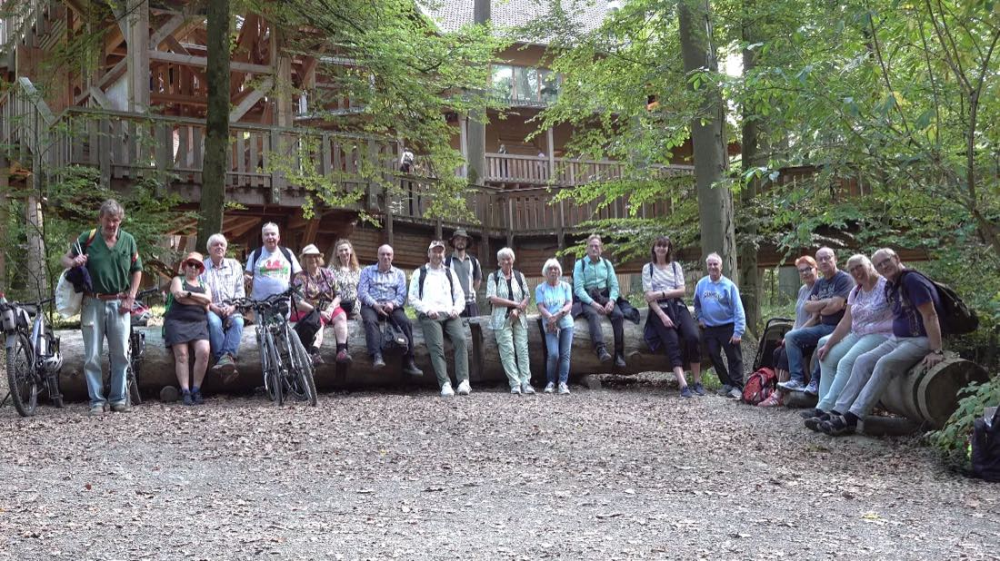
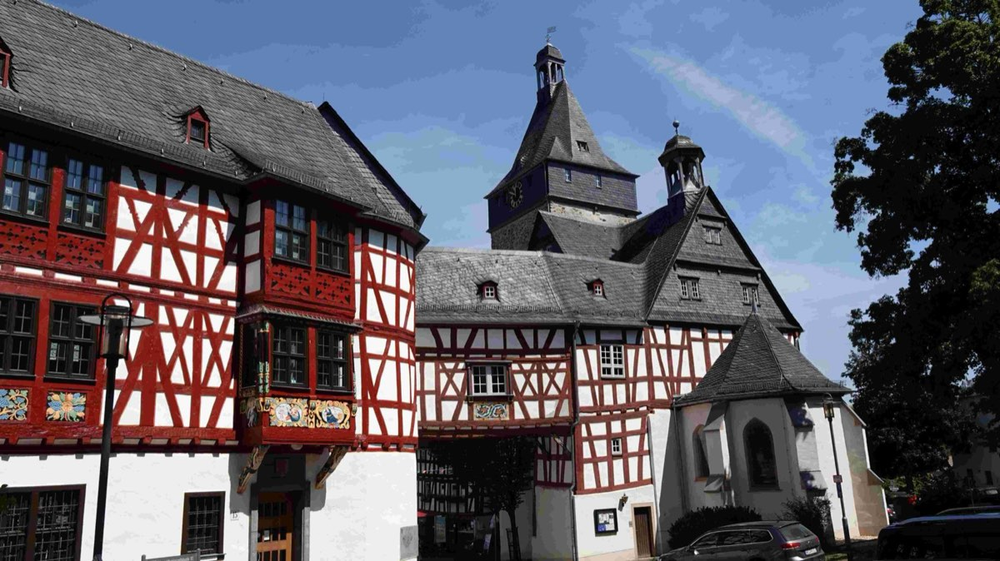
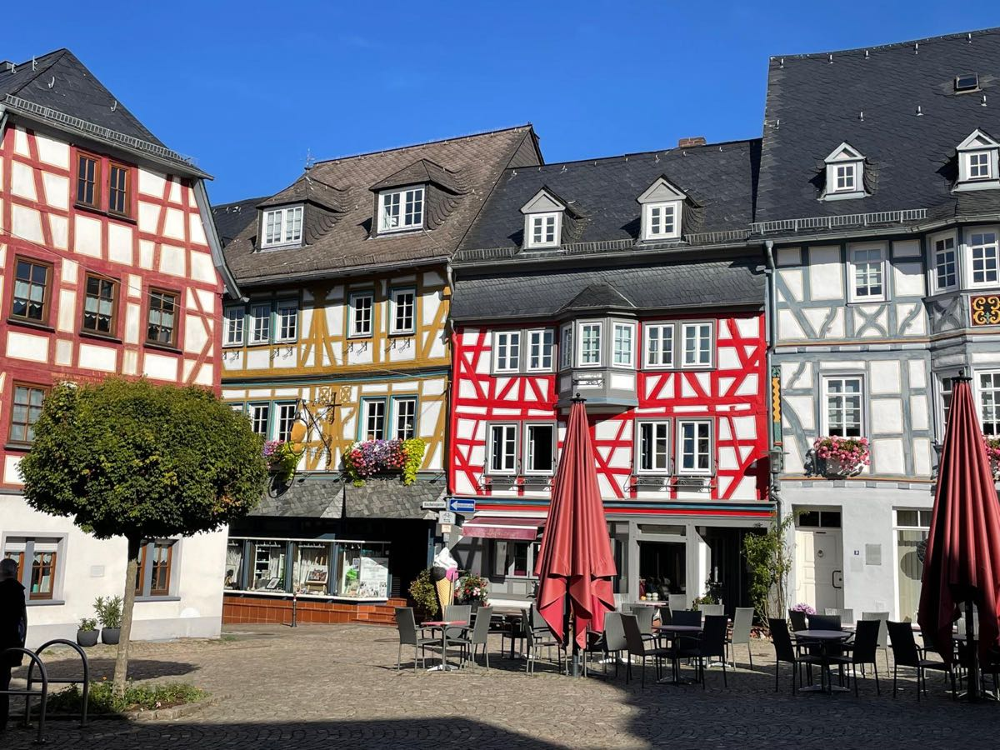
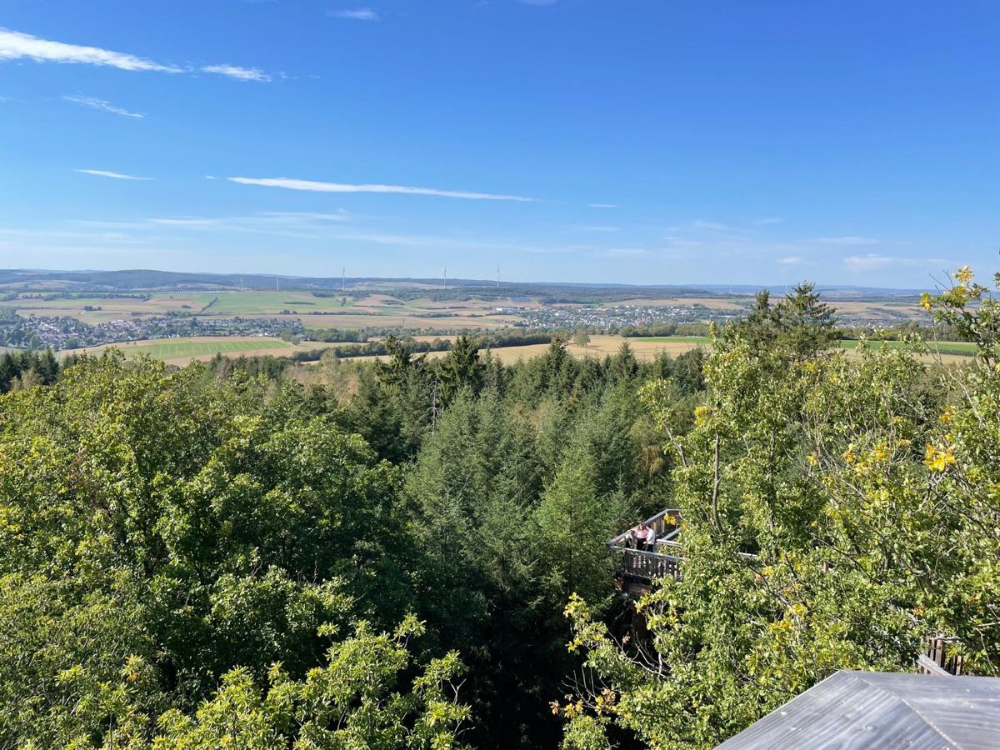
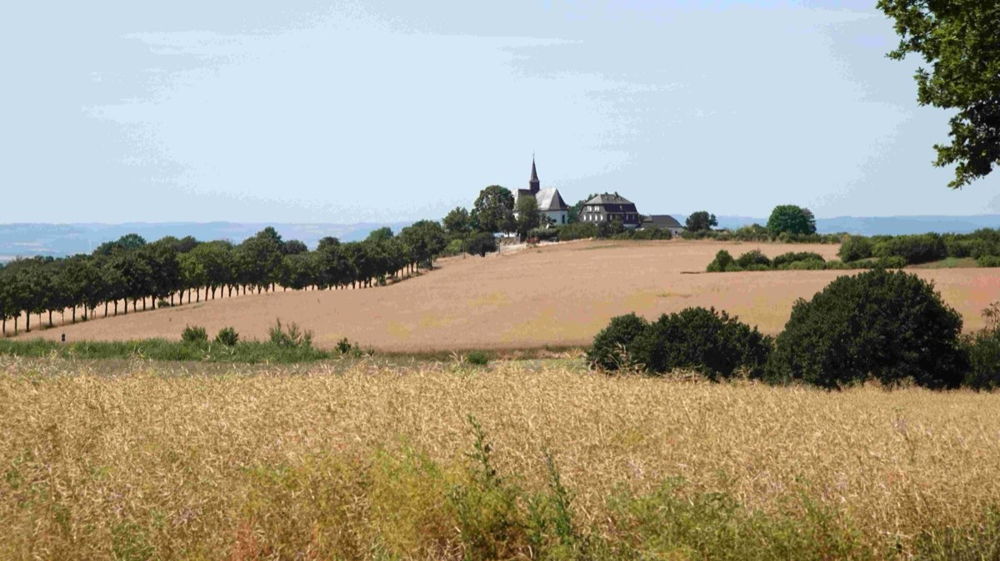
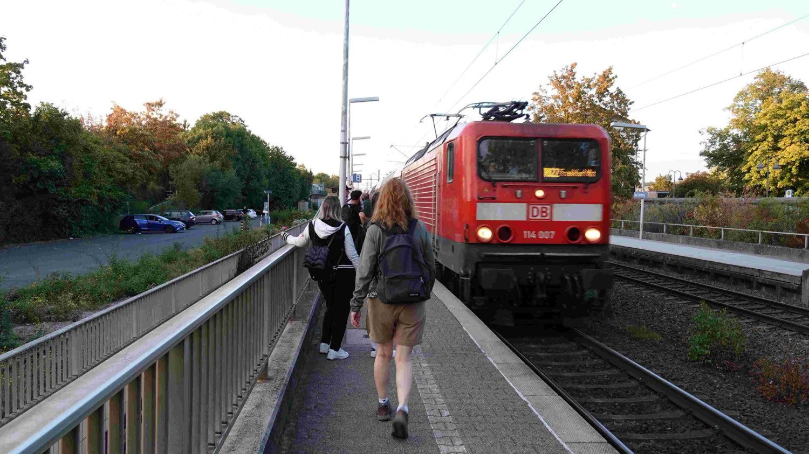
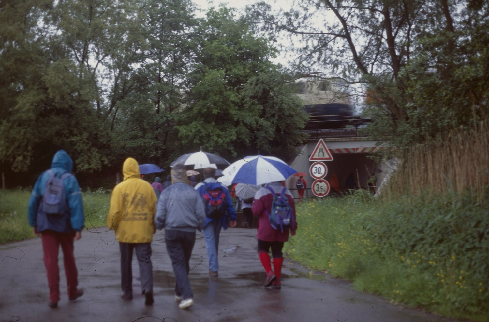
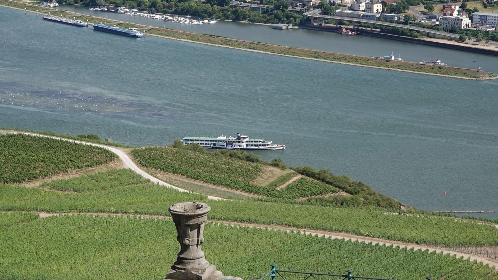

Die Wanderfahrt
Einmal im Jahr steigen wir gemeinsam in den Zug, fahren hinaus und wandern ein Stück. Das Ziel für 2027 steht noch nicht fest. Sobald es feststeht, finden Sie hier Fahrplan und Anmeldung.
2026: Bad Camberg
Mit einer Rekordbeteiligung von 18 Teilnehmerinnen und Teilnehmern fand am 27. September die Wanderfahrt statt. Die Tourleitung übernahmen wie in den Vorjahren Peter Illert und Thomas Bouillon.
Zuerst führte uns der Weg in die historische Altstadt Bad Cambergs, die am Sonntagmorgen nur wenig belebt war. Eine längere Pause legten wir im langgezogenen Kurpark an der Kneipp-Wassertretanlage ein, was bei den spätsommerlichen Temperaturen für willkommene Abkühlung sorgte. Stetig bergan ging es dann zum Baumwipfelpfad. Entgegen mancher Befürchtung erwies sich die Konstruktion über den Baumspitzen als ebenso stabil wie vertrauenerweckend und löste eher Glücks- als Schwindelgefühle aus.
Wem die Füße auf dem Rückweg schwer wurden, der konnte das letzte Stück zum Restaurant im PKW einer Teilnehmerin mitfahren. Gut gestärkt ging es nach fast zwei Stunden Einkehr mit dem – pünktlichen – Doppelstockzug von DB Regio nach Frankfurt zurück. Zur Freude der Bahnfreunde wurde er von einer altgedienten 114er-Lok gezogen, die selten auf Deutschlands Schienen zu sehen ist. Bereits jetzt werden Ideen für unsere nächste Wanderfahrt gesammelt.






Bei jedem Wetter
Die Wanderfahrten der SVS sind abwechslungs- und erlebnisreich. Das Wetter trägt seinen Teil dazu bei.

